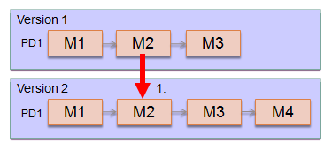
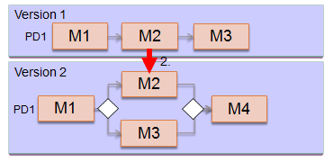
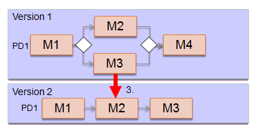
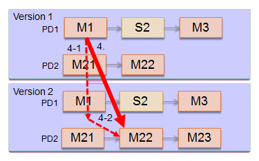
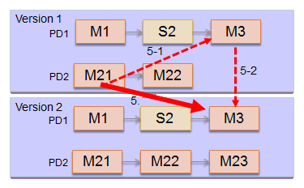

The Stardust WorkflowService provides two methods to perform relocation of activities. One for finding the target activity and one to perform the transition.
Method getAdHocTransitionTargets retrieves the possible targets for
forward transitions starting from the specified activity instance.
List<TransitionTarget> getAdHocTransitionTargets(long activityInstanceOid, TransitionOptions options, ScanDirection direction)
throws ObjectNotFoundException;
The method returns a list of possible transition targets. Parameters are the following:
An ObjectNotFoundException is thrown in case there is no activity instance with the specified OID.
The transition options are a combination of Boolean values to determine if relocation transitions inside sub processes and out of them is allowed.
For details on these options refer to
TransitionOptions. In case no options are specified (null),
TransitionOptions.DEFAULT will be used, which means false
values for all three options.
Possible scan directions are:
For more details on the ScanDirection enumeration type refer to
ScanDirection.
The order of the transition targets in the list is based on the flow of activity graph.
In case the scan direction is BACKWARD, the search is performed in
the following way:
The order of the transition targets in the list is based on the reversed flow of activity graph.
If the scan direction is BOTH, the search order is to search for
transition targets for ScanDirection.FORWARD first, then for
ScanDirection.BACKWARD next.
The following rules apply to the search mechanism apart from the given transition directions:
ScanDirection.FORWARD:
ScanDirection.BACKWARD:
Method performAdHocTransition performs the transition from the
specified activity instance to the specified target.
TransitionReport performAdHocTransition(TransitionTarget target, boolean complete)
throws IllegalOperationException, ObjectNotFoundException, AccessForbiddenException;
The method returns a pair of activity instances of type TransitionReport, where the first is the activity instance from which the transition was performed and the second is the activity instance that was created for the target activity.
Parameters are the following:
true: the activity instance specified should be completed.
WorkflowService.complete()false: the activity as well as all involved subprocesses
should be aborted. The operation is similar with
WorkflowService.abort().An IllegalOperationException occurs if the transition could not be performed because of one of the following reasons:
An ObjectNotFoundException is thrown in case there is no activity instance with the specified OID.
To use this method, you need the permission to perform this activity, otherwise an AccessForbiddenException occurs. Additionally, the following security restrictions apply:
true:
false, the
user must have the right to abort the top most activity instance involved in
the transition.To switch between versions of a process definition and perform relocation in
the same step, you can use the generalized implementation of the
spawnPeerProcessInstance method, which is described in section
Aborting and Starting a Process of
chapter Workflow Processing to Abort and Start
Subprocess. In that case, use the method with specified spawn options:
public ProcessInstance spawnPeerProcessInstance(long processInstanceOid,
String spawnProcessID, SpawnOptions options) throws IllegalOperationException,
ObjectNotFoundException, InvalidArgumentException, ConcurrencyException;
The SpawnOptions parameter specifies options that controls
how the spawning operation has to be performed. For details on this class, please refer
to the JavaDoc of
SpawnOptions.
The spawn options contain the following parameters:
startActivity - the activity from which the spawned process instance should start.
If null, the spawned process instance will start from the default start activity.processStateSpec - holds information about which activities should be
started during spawning of a peer process. It allows to specify multiple jump targets.
Each such a jump target can specify a list of activities representing a (sub) process
hierarchy.spawnMode - Specify the action to be taken with the originating process instance. Spawn mode options
are KEEP, ABORT and HALT. For more information, please refer
to the SpawnOptions
class JavaDoc.comment - comment describing the operation. May be null.dataCopyOptions - instructions on how the data should be transferred
from the originating process instance to the spawned process instance. If null, then
the DataCopyOptions with the default values are used (true,
null, null, true).
For details on the DataCopyOptions type refer to the
DataCopyOptions class JavaDoc. Data copy options are the following:
copyAllData - if true, it will attempt to copy
all data from the source process instance to the target process instance.dataTranslationTable - a Map indicating that the
values for the specified data should be taken from another data
object. The keys are the IDs of the
target data and the values are the IDs of the source data objects.replacementTable - a Map that specifies concrete values
for target data. The keys are the IDs of the target data.useHeuristics - if true, the engine will
attempt to auto determine which
data must be copied by investigating the data mappings and data
paths of the target process instance.converters - a list of data value converter class names.
It allows to provide custom logic when migrating data from one process to another
during spawning of peer process instances.
The classes must be accessible to the engine and must have
a public default constructor.The following example uses data copy option with a converter class
TestDataValueConverter, which implements the
DataValueConverter
interface:
WorkflowService wfs = servicefactory.getWorkflowService();
DataCopyOptions copyOptions = new DataCopyOptions(Collections.singletonList(TestDataValueConverter.class.getName()));
SpawnOptions options = new SpawnOptions(null, true, null, copyOptions);
options.getProcessStateSpec().addJumpTarget("Left");
options.getProcessStateSpec().addJumpTarget("Right");
ProcessInstance peer = wfs.spawnPeerProcessInstance(
pi.getOID(), "{SpawnProcessModel}ExampleProcess", options);
Using the method described above, the following restricted data copying functionality applies:
For details on the data copy semantics for relocating activities, refer to section Data Copy Semantics of chapter Relocation of Activities.
The following examples demonstrate different use cases, in which the
spawnPeerProcessInstance method can be applied.
In this example we have a process definition PD1 with a manual activity M2, which we like to abort and start in a new process instance version of PD1.

Figure: Relocation by Spawning Example
To jump from manual activity
M2 in process definition PD1 with version 1
to manual activity M2 in process definition PD1
with version 2, you need a single call of the
spawnPeerProcessInstance method.
ProcessInstance orgProcess = ws.startProcess("PD1", null, true);
// Spawn process instance (Spawned process starts from activity M2)
DataCopyOptions copyOption = new DataCopyOptions(true, null, null, false);
SpawnOptions options = new SpawnOptions("M2", true, "No comment", copyOption);
ProcessInstance spawnedProcInst
= wfService.spawnPeerProcessInstance(orgProcess.getOID(), "PD1", options);
The following example has a process definition PD1 with a manual activity M2, which we like to abort and start in a new process instance version of PD1, where an XOR split and join transition is used.

Figure: Relocation by Spawning Example
To jump from manual activity
M2 in process definition PD1 with version 1
to manual activity M2 in process definition PD1
with version 2, you also need a single call of the
spawnPeerProcessInstance method. Note that in this case, only root
process instances can be aborted and destination activities must only be on root
processes.
If the source activity M3 is in process definition
PD1 with version 1 inside an XOR transition,
and we like to jump to target activity M2 in process instance
of PD1 with version 2, having no XOR transition,
this is also possible with a single call of the
spawnPeerProcessInstance method.

Figure: Relocation by Spawning Example

Figure: Relocation by Spawning Example
In this case, two API calls are needed:
spawnPeerProcessInstance to jump from manual activity
M1 in process definition PD1 version
1 to manual activity M1 in process
definition PD1 version 2.performTransition call to jump from manual activity
M1 in process definition PD1 version
2 to M22 in subprocess PD2
version 2.
Figure: Relocation by Spawning Example
Two API calls are also needed in this case:
performTransition call to jump from manual activity
M21 in subprocess PD2 version
1 to manual activity M3 in process
PD1 version 1.spawnPeerProcessInstance to jump from manual activity
M3 in process definition PD1 version
1 to manual activity M3 in process
definition PD1 version 2.You can use the spawnPeerProcessInstance method for the process instance
migration. It allows to migrate an active process instance by aborting the original
process instance and creating a new instance of another process (spawnProcessID
parameter). Hereby certain options how to process the actual migration can be provided
via the SpawnOptions parameter, which is described in section
Spawn Options.
The SpawnOptions class provides a constructor with which the
start activity can be defined.
To indicate where in a sub-process hierarchy the newly created process should be relocated
to, use the processStateSpec parameter with the information about which
activities should be started
Example: Migration into sub-process hierarchy (MA: Manual Activity, SPA: SubProcess Activity):
Relocating into an AND split topology would require to define N target activities where N is the number of outgoing transitions. If N is less than the number of outgoing transitions the engine would need to evaluate for which AND branch no target activity has been provided and consider this process branch as completed implicitly. Otherwise the engine would create instances of each of the specified target activities and prepares the transition token information accordingly so that it would be possible at some point to join back the AND split again.
Example - Migration into AND split topology:
In many cases, a migration plan is of the same or similar type for each process instance and it is not necessary to handle them differently. Depending on the activity in which the process would be, the migration strategy would be the same for the most cases.
That means all activities of type A of process A would be handled the same way. You can
run a certain execution plan for a particular process definition and target activity
against all existing instances instead of executing them via API instance by instance.
Use the processStateSpec parameter in your Spawn Options
to specify the list of activities accordingly.
Note that, due to the mandatory synchronous operation of the relocation, spawning into multiple activities, e.g. as resulted from an AND split, might not work as expected in the following scenario:
Reason is that under certain circumstances the workflow line will not be aware of the transition tokens that will be created later for the other spawned activities.
For example:
We have an inclusive OR split followed by 2 activities joined by an inclusive OR. No transaction demarcation between activities and the joining OR. During normal execution, the joining OR will wait for both activities to complete, before activating.
This will work differently if we want to relocate into the splitted activities. Since spawning is done in a loop, activity after activity, when the first activity is created it runs to the OR join. Here it makes the activation check, sees that NO token is pending for the other activity, activates the OR join and continues. Once the second activity is spawned, it runs to the OR join, no token exists for the first activity, because that one was already processed), and continues too. This results in duplicate execution of the workflow from the OR join forward.